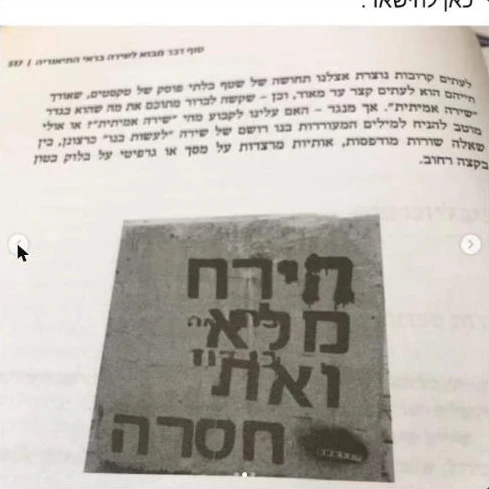
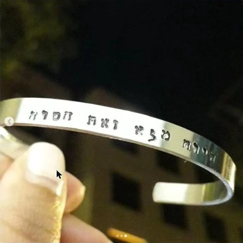
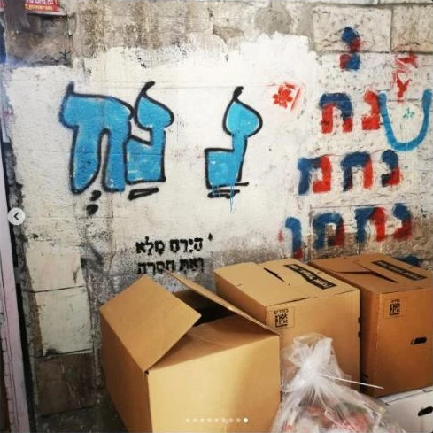
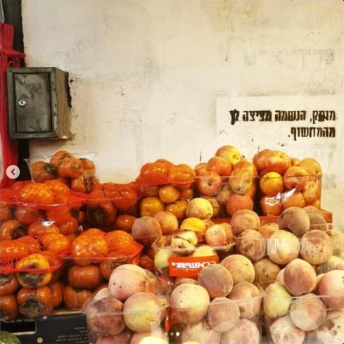

בסביבות 2021 התחלתי לעשות גרפיטי של השיר שלי "הירח מלא ואת חסרה".
הגרפיטי הראשון היה על קובית בטון ליד אוניברסיטת גבעת רם. עשיתי אותו ביחד עם "החסרה". יום אחרי זה מישהו שראה את הגרפיטי פרסם פוסט בפייסבוק ושאל "מה המקור לזה?".
המשכתי לעשות את הגרפיטי ברחבי ירושלים, בעיקר באזור שוק מחנה יהודה. אחרי שנה או יותר מישהו או מישהי (החסרה?) עבר על כל הגרפיטים שעשיתי בשוק וקשקש עליהם. כתגובת נגד יצאתי לעשות עוד גרפיטים ברחבי העיר.
עם הזמן הסתבר לי שהגרפיטי הזה נגע בהרבה אנשים, והתחילו להגיע אלי סיפורים מרשימים על פועלו בעולם. מסתבר שהגרפיטי שלי נלמד בשיעור הראשון באוניברסיטה הפתוחה בקורס "מבוא לשירה". הוא גם הגיע לספר לימוד לאוניברסיטה, בפרק שעוסק בשאלה "מה זו אמנות?" (אני, אגב, לא מוזכר שם כיוצר הגרפיטי. ברוב הגרפיטים לא כתבתי את שמי.)

הגרפיטי בספר הלימוד.
אבל מעבר להצלחה האקדמית של "הירח מלא ואת חסרה" הגיעו אלי סיפורים מהממים על איך הגרפיטי הזה השפיע ותפס מקום בלבבות האנשים שראו אותו. הגיעו אלי סיפורים על זוגות שזה היה המשפט שלהם. מישהי שחרטה את הגרפיטי על צמיד. כמה אנשים סיפרו לי שראו את הגרפיטי הזה בתל אביב, למרות שאני עשיתי אותו רק בירושלים.

צמיד עם השיר חרוט עליו, תמונה ששלחה לי מישהי.

עוד אחד, על קיר בירושלים.
היה עוד גרפיטי שעשיתי, אבל בקנה מידה קטן יותר: "מותק הנשמה מציצה לך מהמחשוף".

"מותק הנשמה מציצה לך מהמחשוף", בשוק מחנה יהודה.
השיר: הירח מלא ואת חסרה
הירח מלא ואת חסרה לי ומצב קיומי אקזיסטנציאליסטי כי כלל ופרט וכלל נכרכו כמו מרור וחרסת בתוך לאפת מצה רטבה וזה הפסח השני בראשון לא מצאנו כוון ולא (אלהים)
וטוב לאכל שרויה רטבה בפרטים הקטנים היפים הפורטים על הלב המתגלים לאטם ואשכנזים אוכלים אותה נקשה זקופת גו נאחזת חזק בכללים הגבוהים קרנות המזבח במחסום כסופים וכשהיא כל כך חזקה היא נשברת כל כך בקלות
(וילדים אבודים נלכדו ברשת החוטין הדקיקין וכל הילדות אבדה להם והם בת מלך ללא מלוכה וכסא שאף אחד לא יושב עליו ודברים שמישהו קנה ומת לפני שהספיק ליהנות מקרן זוית מלטוף תלתלין על ספסל חם לאור שמש חמה) ואת ספרדיה וזה פסח שני ואיה הלחם אשר הוא אוכל? עוד לא הספיק להחמיץ ותפוחי זהב במשכיות כסף ודבר דבור על אפניו